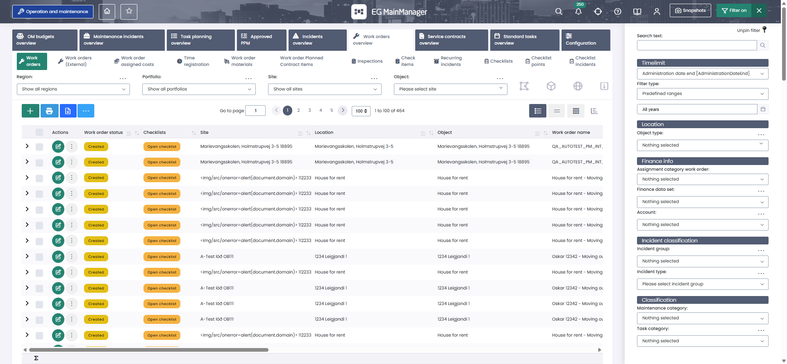
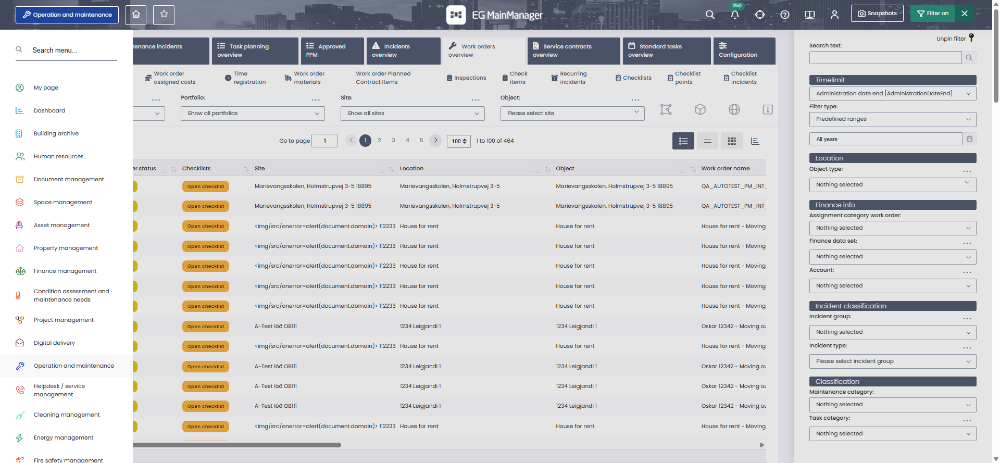
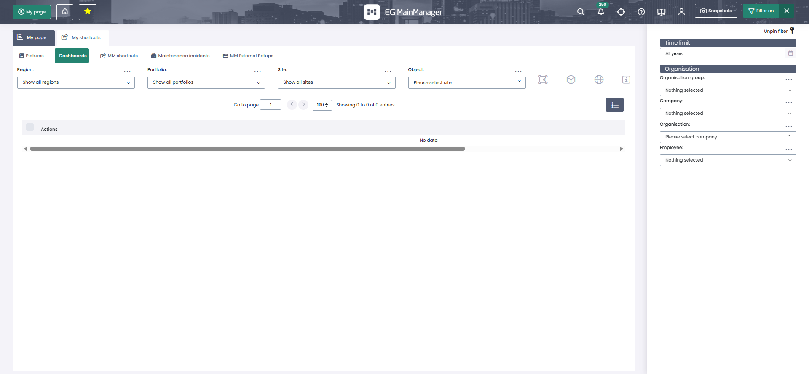
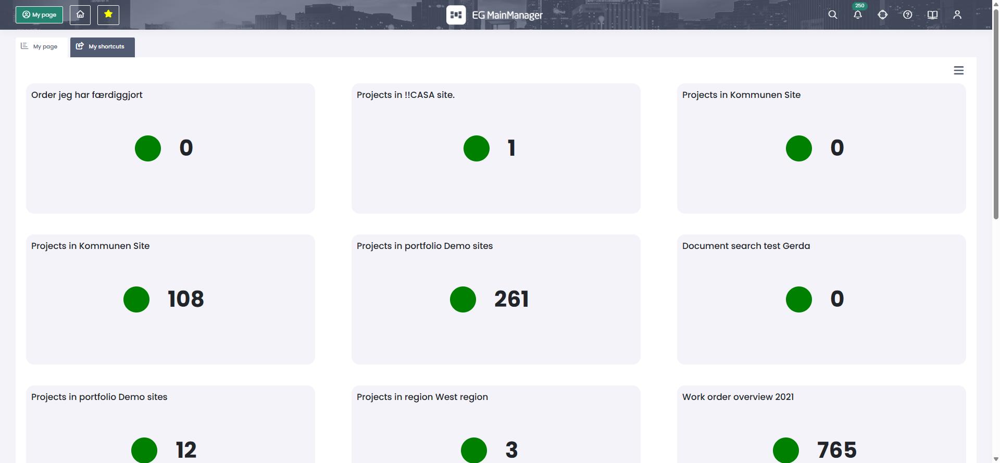
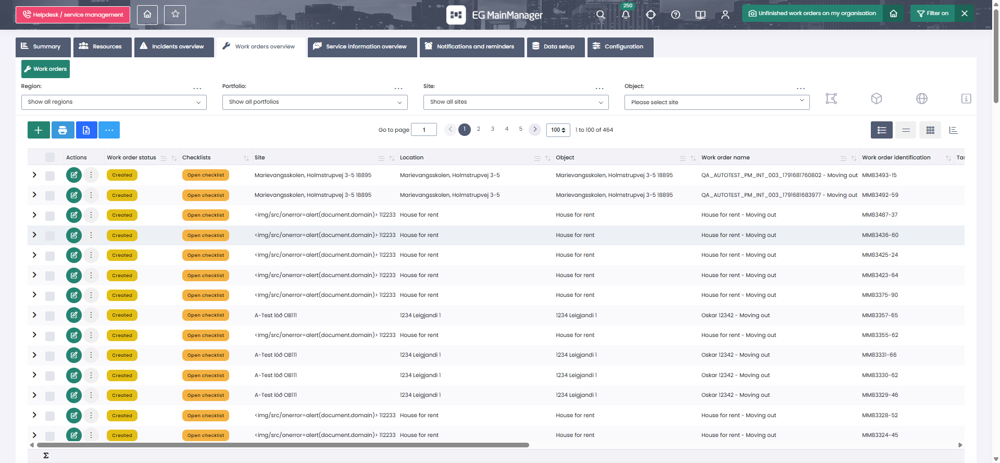

Every API call in Scenario 1, captured live on kommune, with a decision recorded against each one: does it go in the load test, or not — and why. Written for someone who has never done performance testing, and ending with the complete script, ready to copy into one file and run.
If you have never done this before, start here. Nothing in this part assumes any prior knowledge.
A load test does not open a browser. It sends the same HTTP requests a browser would send, from many simulated users at once, and measures what comes back.
That one sentence explains almost every decision in this document. Unpacking it:
When you click something in MainManager, your browser sends a handful of small messages to the server — "give me the work order list", "remember which tab is open". Each one is an HTTP request. The server does the work, usually a database query, and sends back an HTTP response. The browser then draws the result on screen.
The drawing happens on your computer and costs the server nothing. The requests are what the server has to handle. So when we want to know "can the server cope with 250 people using this at once?", we do not need 250 browsers. We need something that can send 250 users' worth of requests. That tool is k6.
k6 runs a small JavaScript program. Each simulated user — k6 calls them VUs, virtual users — runs that program over and over. One pass through the program is an iteration.
Because k6 does not render pages, it has no idea what a click "means". It sends only what you tell it to send. So the whole job becomes: find out exactly which requests the browser sends, then replay them faithfully. Replay the wrong ones and the test still runs, still passes, and still produces a convincing report — measuring something that never happens in real use.
You could, and for a handful of users it works. It does not scale: a real Chrome instance needs roughly 300–700 MB of memory and a CPU core's worth of work. 250 of them needs a small server farm, and most of that hardware goes on rendering pixels nobody looks at.
k6 sends the same requests using a few hundred kilobytes per VU, so 250 VUs run comfortably on one laptop. That is the trade: you give up "it looks right on screen" and you gain "I can actually produce the load".
It also makes the measurement cleaner. If a browser-based test is slow, you cannot easily tell whether the server was slow or the browser was busy painting. With k6 there is no painting, so what you measure is server time plus network time, and nothing else.
Everything we need comes from one place: the browser's Network panel. Press F12 in Chrome, click the Network tab, and do something in the app. Every request appears as a row.
The columns, and what each is worth to us:
| Column | What it is | Why we care |
|---|---|---|
| Name | The endpoint, e.g. GetMMList | This is the API name. It is what we write into the k6 script. |
| Status | HTTP code: 200 = OK, 403 = forbidden, 500 = server error | Useful, but not sufficient. A 200 can still contain an empty grid. This is the single biggest trap in the discipline, and Part 4 is largely about it. |
| Type / Initiator | Whether it is an API call (xhr/fetch), a stylesheet, a script, an image | The main sorting key for keep-or-drop. |
| Size | Bytes over the wire. "(from disk cache)" means nothing was transferred | Big responses are where the server spends effort. Cached ones cost the server nothing — a strong signal to drop. |
| Time | How long the request took | Points you at the calls that will break first under load. |
Three settings to turn on before you capture anything:
The panel shows something like 19 / 44 requests 54.9 kB / 5,587 kB transferred. The first number in each pair is what survives your filter; the second is the true total. The two are usually very far apart, and a beginner reading only the filtered one will badly underestimate what a page does. Always glance at both.
The question everybody asks first: how do you know which API is being called, and how do you choose between them?
Not one endpoint in our scripts was guessed, read out of source code, or taken from documentation. Every single one was observed in a real browser session against the real environment, and the observation was written into the script's header comment with the date it was captured.
The method is three steps:
Then clear the log and do the next click. One click at a time is what makes the list unambiguous. If you click four things and then look, you cannot tell which call belonged to which action.
The Network panel is ideal for looking. For copying out exact request bodies it is tedious. This recorder, pasted into the Console once, captures everything the page sends from that moment on. It is how every table in Part 3 was produced:
// Wrap XMLHttpRequest so every call the page makes is recorded.
window.__net = [];
const ox = XMLHttpRequest.prototype.open, os = XMLHttpRequest.prototype.send;
XMLHttpRequest.prototype.open = function (m, u) {
this.__m = m; this.__u = u; return ox.apply(this, arguments);
};
XMLHttpRequest.prototype.send = function (b) {
const t0 = performance.now();
const rec = { m: this.__m, u: String(this.__u), req: b,
st: null, ms: null, bytes: null, res: null };
this.addEventListener('load', function () {
rec.st = this.status;
rec.ms = Math.round(performance.now() - t0);
rec.bytes = this.responseText.length;
rec.res = this.responseText.slice(0, 300); // keep the start of the response
});
window.__net.push(rec);
return os.apply(this, arguments);
};
// Before each step: window.__net = []; performance.clearResourceTimings();
// After each step: copy(window.__net) // puts it on your clipboardIt captures the two things the Network panel makes you click around for: the request body and the start of the response. Both turn out to matter enormously.
To see the dropped items too — images, CSS, fonts — add the browser's own resource timeline, which is the same data the Network panel draws:
performance.getEntriesByType('resource')
.map(e => ({ name: e.name, type: e.initiatorType,
ms: Math.round(e.duration),
transferred: e.transferSize, // ~0 means it came from cache
actualSize: e.decodedBodySize }));A single click can fire anything from zero to twenty-five requests. Here is the rule applied to each one, in order.
| Ask | If yes | Reasoning |
|---|---|---|
| 1. Is it a static file — image, CSS, JS, font? | DROP | The browser caches these. A real user downloads them once on their first visit of the day and then never again. Replaying them every iteration means measuring a file server that is not under test, and inflating the throughput numbers into fiction. |
| 2. Is it analytics, telemetry, or a third-party domain? | DROP | Not the customer's system. We are not here to load-test somebody else's. |
| 3. Is it a background channel or keep-alive that runs on a timer rather than on the click? | DROP | Not part of the user journey. Include it only if the test is specifically about it. |
| 4. Does the server have to query the database or build something to answer it? | KEEP | This is the server doing work. This is the entire point of the exercise. |
5. Is it a page the server renders (.aspx)? | KEEP | Rendering an ASP.NET page is real server work, and the login page in particular hands us a token we need. |
If a request was not observed in the browser, it does not go in the script. If it was observed and rule 4 applies, it goes in — even when it looks pointless.
Scenario 1 fires three calls to saveToggleValue whose entire response is the eight characters {"d":null}. They look like noise. They are not: the server uses them to record which grid is currently active, and filters silently stop working without them. We learned that the hard way. Judging a call by how important it looks is how you end up with a test that passes and proves nothing.
Some requests carry a value that the server generated earlier in the same session and expects back. Three of them appear in MainManager:
| Token | Issued by | Used by | If you invent one |
|---|---|---|---|
__VIEWSTATE | The login page HTML | The login POST | Login fails. Loudly — the good case. |
UniqueString | InitMainLayout | Every grid and filter call | The server answers 200 and holds no layout against it. Filters bind to nothing. The grid reloads unfiltered. Every check passes. |
Checksum | BuildMyPage, one per widget | InitPortalAggregate | HTTP 500. |
Read the UniqueString row again, because it is the most dangerous failure mode here. For a long time our library invented its own UniqueString instead of reading the one the server sent. Every request returned 200. Every assertion passed. Every report looked healthy. And every filter was a no-op.
We proved it by sending both values in the same session against the same filter:
| UniqueString | Rows after filtering | Verdict |
|---|---|---|
| Invented by the script | 2,554 | Unfiltered — the filter did nothing |
Read from the InitMainLayout response | 3 | Correct — matches what the browser shows |
So: always read the response, not just the status code. Whenever a request contains an id, a key, a token or a checksum, find out where that value came from. If the server minted it, your script must capture and resend it.
Six steps, as a manual tester performs them. Every request that fired, what it was, whether it went into the script, and why.
Scenario 1 mirrors one real user journey:
Everything below was captured on kommune.mainmanager.is on 11–12 October 2026, signed in as a standard user. The timings come from a single-user session: they show the shape of the journey, not a performance baseline.
The tester opens the login URL, types a username and password, and presses Login.
__VIEWSTATE that must be sent back with the credentials.Before the tester has typed anything, simply opening the URL pulls 30 requests. This is the clearest possible illustration of the keep-or-drop rules, so here is the complete list, grouped by type:
| Request | Type | Time | Transferred | Actual size | Verdict | Why |
|---|---|---|---|---|---|---|
| MMV2Login.aspx | document | 1,560 ms | 7.6 KB | 7.6 KB | KEEP | The server renders this page, and its HTML contains the __VIEWSTATE token we must echo back. Without this GET there is no login. |
7 stylesheets — components.min.css (600 KB), bootstrap.min.css, all.min.css, plugins.min.css, login.css, custom.css, bootstrap-switch.min.css |
link | 235–260 ms | 2.1 KB | 930 KB | DROP | Rule 1. Note the gap: 930 KB of CSS, 2 KB actually transferred — the browser already had them. |
16 scripts — jquery-3.7.1.min.js, bootstrap.min.js, jquery.validate.min.js, 2FA.js, app.min.js, 2× WebResource.axd and nine more |
script | 4–755 ms | 4.2 KB | 268 KB | DROP | Rule 1. These run in the browser; the server only serves the files. |
4 images — bg1.jpg, bg2.jpg, bg3.jpg, orn_logo.png |
img | 255–486 ms | 1.2 KB | 2,710 KB | DROP | Rule 1, and the most extreme case: 2.7 MB of background photographs for a login screen. Replaying these would dominate the test and measure nothing but file serving. |
| restapi/internal/GetLoginPageLogo ?LoginPageID=6 |
xhr | 313 ms | 23.9 KB | 38 KB | DROP | A genuine judgement call — it is an API call. But it returns the customer's branding image, it is identical for every user, and it is cached. No database work. Rule 1 in spirit. |
| restapi/internal/GetLoginPagePictures ?LoginPageID=6 |
xhr | 331 ms | 0.3 KB | 0 B | DROP | Same reasoning, and it returns an empty body here anyway. |
Scroll the table sideways if your screen is narrow.
The login page is nearly four megabytes of content. On a warm browser only 32 KB crosses the network, because everything else is cached. If k6 downloaded all 30 files on every iteration it would generate well over a hundred times the real network traffic and spend its time measuring a static file server instead of the application. That is why the rule is "drop static assets" — and why k6 deliberately does not behave like a browser.
Pressing Login posts the form, the server redirects, and the application shell loads. Below are the application calls that resulted — 18 of them, plus 13 further static files dropped without comment.
| # | Request | Request body | Status | Time | Size | Verdict | Why |
|---|---|---|---|---|---|---|---|
| — | POST MMV2Login.aspx | __VIEWSTATE, __VIEWSTATEGENERATOR, __EVENTVALIDATION, username, password | 302 | — | — | KEEP | The authentication itself. |
| — | GET MMV2Content.aspx following the redirect | — | 200 | 3,855 ms | 10.5 KB | KEEP | The post-login page render — and how we verify the login worked. See the code below. |
| 1 | MMLayoutReadOnly.asmx/IsNewUser | {} | 200 | 425 ms | 11 B | DROP | An 11-byte flag deciding whether to show a welcome tour. Negligible server cost; omitted deliberately. |
| 2 | restapi/internal/GetHeaderLogo | ?ReportSettingsID=6 | 200 | 342 ms | 2 B | DROP | Branding again. Rule 1. |
| 3 | restapi/Internal/KeepAlive | — | 200 | 316 ms | 4 B | DROP | Rule 3 — a session heartbeat on a timer, not a user action. |
| 4 | MMLayoutReadOnly.asmx/BuildMainMenu | {} | 200 | 606 ms | 26 KB | KEEP | Rule 4. The server builds this user's entire navigation menu from their permissions — real work, 26 KB of result. |
| 5 | MMLayoutReadOnly.asmx/GetUnreadCount | {} | 200 | 389 ms | 171 B | KEEP | Rule 4 — a database count for the notification badge. Small response, real query. |
| 6 | signalr/negotiate | ?clientProtocol=2.1&user=suhsh&connectionData=[notificationcenterhub] | 200 | 244 ms | 392 B | DROP | Rule 3. Opens the live-notification push channel — a long-lived connection, not a request the user waits on. k6 does not model it. |
| 7 | signalr/start | ?transport=serverSentEvents&connectionToken=… | 200 | 240 ms | 25 B | DROP | The same channel. Worth knowing it exists — if we ever load-test notifications, it becomes the subject. |
| 8–18 | GetMenuItemSteps, GetMenuItemProcessItems, 3× saveToggleValue, InitMainLayout, 2× LoadMMFilterControl, BuildLayout, GetMMListHeaders, GetMMList | The restored module — see the note below | 200 | 4,961 ms combined | 942 KB | NOT REPLAYED | All "keep"-class calls, but not part of Scenario 1's login step. Read the note — this is a deliberate, documented simplification, not an oversight. |

MainManager restores the module the account last viewed, so a real login triggers a full grid load — about five seconds of server work and 942 KB — before the user does anything at all.
Scenario 1 does not replay that. Its login step sends the page GET, the credential POST, BuildMainMenu and GetUnreadCount; step 2 then navigates to My page explicitly. We chose this because the restored module depends on per-account state: replaying it would make every run depend on whatever somebody last clicked, and the measurement would not be reproducible.
The cost of that choice: Scenario 1 understates the server work of a login by roughly one grid load. The shared library has a loadLandingModule() helper for scenarios that want it. Know this when you read the numbers, and do not let anyone describe the script as a pixel-perfect replica. It is a deliberate model, and the deliberate parts are written down.
// In the scenario file — the whole of step 1:
if (!login({ username: USERNAME, password: PASSWORD })) {
sleep(randomIntBetween(20, 40)); // see the note below
return;
}
sleep(randomIntBetween(1, 3)); // think timeAnd what login() does, from the shared library:
// 1. GET the login page — we need its body, so don't discard it
const page = GET(`${APP}/MMV2Login.aspx`, { responseType: 'text' });
check(page, { 'login page 200': (r) => r.status === 200 });
// 2. Pull the three hidden WebForms tokens out of the HTML
const viewstate = extractField(page.body, '__VIEWSTATE');
const vsgen = extractField(page.body, '__VIEWSTATEGENERATOR');
const eventval = extractField(page.body, '__EVENTVALIDATION');
// 3. POST them back together with the credentials
const res = POST(`${APP}/MMV2Login.aspx`, {
'__EVENTTARGET': '', '__EVENTARGUMENT': '',
'__VIEWSTATE': viewstate, '__VIEWSTATEGENERATOR': vsgen,
'__EVENTVALIDATION': eventval,
'lgnUserLogin$UserName': user.username,
'lgnUserLogin$Password': user.password,
'lgnUserLogin$Login': 'Login',
}, { redirects: 0 }); // follow the redirect ourselves, to time it separately
// 4. Follow the redirect to the content page
// 5. Did it work? NOT by status code — a failed login also returns 200.
success = check(landing, {
'logged in (on Content page)': (r) => r.url.includes('MMV2Content.aspx'),
'login not bounced back': (r) => !r.url.includes('MMV2Login.aspx'),
});
// 6. The two shell calls
POST(`${APP}/services/MMLayoutReadOnly.asmx/BuildMainMenu`, '{}', ajaxJson());
POST(`${APP}/services/MMLayoutReadOnly.asmx/GetUnreadCount`, '{}', ajaxJson());Step 5 checks the URL, not the status. A rejected login in WebForms re-renders the login page and returns 200 OK. Assert on the status code and every failed login counts as a success. We assert that we landed on the content page.
The 20–40 second pause on failure is not tidiness. A failed login ends the iteration in a fraction of a second and k6 immediately starts another. Without the pause each VU retries several times per second and the test floods a struggling login endpoint into total collapse — on one tenant this produced a 65–69% login failure rate that was entirely self-inflicted. You stop measuring the system and start measuring your own test.
The tester clicks the module name at top-left to open the navigation menu, then clicks "My page".

BuildMainMenu during login, so opening it is pure JavaScript.The manual test case says "click the navigation menu, then click My page" — two actions. A naive script would try to model both. We cleared the recorder, opened the menu, and dumped it: 0 requests. So the script models the menu opening as nothing at all, and the code carries a comment saying why.
This is the cheapest and most common finding: user actions that cost the server nothing. You only learn which ones they are by capturing them one at a time.
| # | Request | Request body | Status | Time | Size | Verdict | Why |
|---|---|---|---|---|---|---|---|
| 1 | saveToggleValue | {"MySection":"ActiveDataStateV2","MyKey":"ActiveNavigationItem","Value":"MyPage"} | 200 | 269 ms | 8 B | KEEP | Records server-side which module is active. Tiny, and essential — see the box after this table. |
| 2 | GetMenuItemSteps | {"Tag":"MyPage"} | 200 | 297 ms | 8.2 KB | KEEP | Rule 4. Asks the server what tabs this module has for this user. |
| 3 | GetMenuItemProcessItems | {"Parent":"MyPage","Tag":"Shortcuts"} | 200 | 257 ms | 5.9 KB | KEEP | Rule 4. The sub-tabs within that tab. |
| 4 | GetMenuItemProcessItems (again, identical) | {"Parent":"MyPage","Tag":"Shortcuts"} | 200 | 247 ms | 5.9 KB | KEEP | The same call twice, ten milliseconds apart. It looks like a front-end bug — and probably is — but we replay it, because the server really does get asked twice in production. Fixing the application's inefficiency is not the load test's job; reproducing it is. |
| 5 | saveToggleValue | {…,"MyKey":"ActiveNavigationItem","Value":"MyPage"} | 200 | 249 ms | 8 B | KEEP | Active module. |
| 6 | saveToggleValue | {…,"MyKey":"ActiveNavigationStepMyPage","Value":"Shortcuts"} | 200 | 248 ms | 8 B | KEEP | Active tab. |
| 7 | saveToggleValue | {…,"MyKey":"ActiveNavigationStepItemMyPage.Shortcuts","Value":"DashboardHelper"} | 200 | 827 ms | 8 B | KEEP | Active sub-tab. Note it took 827 ms to return eight bytes — these are not free. |
| 8 | MMLayout.asmx/InitMainLayout | {"UniqueString":"","MenuItemKey":"DashboardHelper","SummaryID":0,"MenuItemID":0,"MenuItemTypeID":7,"ProcessTag":"MyPage","ProcessStepTag":"Shortcuts","SnapshotID":0} | 200 | 588 ms | 2.6 KB | KEEP | Rule 4, and this is where the server issues the UniqueString. We send an empty one and read the real one out of the response. |
| 9 | LoadMMFilterControl | {tag: 'DashboardHelper', type: '2'} | 200 | 261 ms | 60 KB | KEEP | Rule 4. Builds the right-hand filter panel — 60 KB of generated markup for a panel the user may never open. |
| 10 | BuildLayout | A large JSON layout container, echoed back to the server | 200 | 242 ms | 7.9 KB | KEEP | Rule 4. This one sends more than it receives — worth remembering when judging bandwidth. |
| 11 | GET restapi/List/GetMMListHeaders | ?DataPath=DashboardHelper$1$0&UniqueString=b793…&Gantt=False | 200 | 258 ms | 892 B | KEEP | The grid's column definitions. Carries the UniqueString from call 8. |
| 12 | POST restapi/List/GetMMList | A long DataTables form payload: column definitions, paging, ordering | 200 | 633 ms | 238 B | KEEP | Rule 4 — the grid query itself. Normally the heaviest call in any step; small here only because this particular grid is empty. |
Calls 5, 6 and 7 each return the eight characters {"d":null}. Every instinct says skip them.
Do not. They tell the server which module, tab and sub-tab are active for this session. MainManager's filter endpoints are session-scoped — they apply to whatever the server believes is the active grid. Omit these and the filter calls still return 200 OK, but they bind to nothing and the grid reloads completely unfiltered. Silently. This cost us real time to find, which is why the library's comment on these lines reads "NOT incidental (the old comment here claimed they were)".

// Step 2: navigation menu -> My page. Opening the menu itself is client-side
// and fires no HTTP, so this is just the module switch + dashboard load.
openMyPage('2. Navigation -> My page module');
sleep(randomIntBetween(1, 3));All twelve calls live inside the shared openMyPage() helper, so the scenario file stays readable. Here is its core, with the captured values visible:
POST(`${APP}/services/MMLayoutReadOnly.asmx/GetMenuItemSteps`,
JSON.stringify({ Tag: 'MyPage' }), j);
// Persist the ACTIVE navigation state server-side. NOT incidental: BuildMyPage
// only returns the dashboard widgets when MyPage / MainSummary-<id> is the active
// nav item + step. Omitting these makes REPEAT navigations return an empty
// dashboard (0 widgets). Bodies captured live.
const sum = `MainSummary-${MYPAGE_SUMMARY_ID}`;
POST(…/saveToggleValue, JSON.stringify({ MySection: 'ActiveDataStateV2',
MyKey: 'ActiveNavigationItem', Value: 'MyPage' }), j);
POST(…/saveToggleValue, JSON.stringify({ MySection: 'ActiveDataStateV2',
MyKey: `ActiveNavigationStepMyPage`, Value: sum }), j);
POST(…/saveToggleValue, JSON.stringify({ MySection: 'ActiveDataStateV2',
MyKey: `ActiveNavigationStepItemMyPage.${sum}`, Value: sum }), j);
POST(`${APP}/services/MMLayout.asmx/InitMainLayout`, JSON.stringify({
UniqueString: '', MenuItemKey: sum, SummaryID: MYPAGE_SUMMARY_ID,
MenuItemID: 0, MenuItemTypeID: 2, ProcessTag: 'MyPage',
ProcessStepTag: sum, SnapshotID: 0,
}), j);Compare that InitMainLayout body with row 8 of the table above. It is the same object, field for field. That is what "captured, not guessed" means in practice.
The tester clicks the "My page" tab, which draws the dashboard of counter widgets.

This is the most interesting step in the scenario: one click produces 24 requests, and 18 of them are the same endpoint fired in parallel.
| # | Request | Request body | Status | Time | Size | Verdict | Why |
|---|---|---|---|---|---|---|---|
| 1–3 | 3× saveToggleValue | ActiveNavigationItem: MyPageActiveNavigationStepMyPage: MainSummary-2147483643ActiveNavigationStepItemMyPage.MainSummary-2147483643: MainSummary-2147483643 | 200 | ~276 ms each | 8 B | KEEP | As before. Note the id 2147483643 — that is the My page summary id, read straight off the wire and written into the library as a constant. |
| 4 | InitMainLayout | {"UniqueString":"","MenuItemKey":"MainSummary-2147483643","SummaryID":2147483643,"MenuItemID":0,"MenuItemTypeID":2,"ProcessTag":"MyPage","ProcessStepTag":"MainSummary-2147483643","SnapshotID":0} | 200 | 742 ms | 2.7 KB | KEEP | Rule 4. |
| 5 | MMLayoutReadOnly.asmx/BuildMyPage | {"MainSummaryID":2147483643,"FilterValues":""} | 200 | 3,958 ms | 35.7 KB | KEEP | The dashboard build, and the slowest single call in the scenario. Returns the widget layout as HTML — and, crucially, the Checksum for every widget. Everything below depends on reading this response. |
| 6 | POST restapi/List/GetMMList | draw=2&columns[0][data]=0&… | 403 | 3,929 ms | 0 B | DROP | A real product race condition. The grid from the previous sub-tab fires its reload after the layout has already changed underneath it, so the server rejects it. The user sees a "DataTables warning — Ajax error" pop-up. A genuine defect worth raising, but not part of the journey, so not in the script. |
| 7–24 | 18× MMLayoutReadonly.asmx/InitPortalAggregate fired in parallel | {"PortalKey":"Snapshot-4390","MainModuleID":883,"ExcludeLocation":false,"Checksum":"lf6VxRunmSpf8IiIv+A8wdj9VcrPNTtXZQVyDa/1Gzg="}… and seventeen more, one per widget, each with its own key and checksum | 200 | 672–2,373 ms each, concurrent | 233–264 B each | KEEP | Rule 4, eighteen times over. Each is a separate aggregate query: tiny responses, substantial database work. This is the real cost of the dashboard. |
The eighteen widget keys, in the order they fired:
Snapshot-4390 Snapshot-4394 Snapshot-4393 Snapshot-4392 Snapshot-4391
Snapshot-4385 Snapshot-4388 Snapshot-4389 Snapshot-3225 Snapshot-4273
Snapshot-4270 Snapshot-4282 Snapshot-4281 Snapshot-4264 Snapshot-4275
Snapshot-4280 Snapshot-4279 Snapshot-3226Note Snapshot-4270. Hold on to it — it reappears in Step 4, and that connection is the answer to "how do we pick the right API".
A naive script would paste all eighteen keys and checksums into the code. That breaks the first time a customer adds a tile, and it is useless on any other tenant. Instead the library parses them out of the BuildMyPage response:
const built = POST(`${APP}/services/MMLayoutReadOnly.asmx/BuildMyPage`,
JSON.stringify({ MainSummaryID: MYPAGE_SUMMARY_ID, FilterValues: '' }), ajaxJsonText());
check(built, {
'BuildMyPage 200': (r) => r.status === 200,
'BuildMyPage no server error': (r) => bodyOk(r), // catch 200-with-error-payload
});
// Each widget renders a script call. Full signature, read off the live page:
// initPortalAggregate(containerid, portalkey, mainmoduleid, excludelocation,
// countersteps, checksum)
// initPortalAggregate('PortalAggregateInfo4390','Snapshot-4390',883,false,1,'lf6V...=')
const html = built.json('d') || '';
const re = /initPortalAggregate\(\s*'[^']*'\s*,\s*'([^']+)'\s*,\s*(\d+)\s*,\s*(true|false)\s*,\s*\d+\s*,\s*'([^']*)'/g;
const widgets = [];
let m;
while ((m = re.exec(html)) !== null) {
widgets.push({ key: m[1], moduleId: parseInt(m[2], 10),
exclude: m[3] === 'true', checksum: m[4] });
}
check(widgets, { 'dashboard has widgets': (w) => w.length > 0 });
// A real browser fires these CONCURRENTLY, so we batch them rather than looping
// serially — both more realistic and the correct concurrent server load.
const reqs = widgets.map((w) => ({
method: 'POST',
url: `${APP}/services/MMLayoutReadonly.asmx/InitPortalAggregate`,
body: JSON.stringify({ PortalKey: w.key, MainModuleID: w.moduleId,
ExcludeLocation: w.exclude, Checksum: w.checksum }),
}));
http.batch(reqs);That regular expression originally captured only arguments 2 and 3 — the key and the module id — and not the checksum at the end. InitPortalAggregate returns HTTP 500 without a valid checksum.
So on every run of Scenario 1, all eighteen widget calls failed, and the check named "all dashboard widgets loaded" sat at 0%. The dashboard load was being measured as an error path rather than as a dashboard load — for weeks. Precisely the same class of mistake as the invented UniqueString: a token the server handed us that we were not handing back.
Note http.batch as well. Sending eighteen requests one after another would be wrong twice over: it is not what the browser does, and it would spread the database work across eighteen seconds instead of hitting the server with all of it at once — which is exactly the stress we are trying to measure.
// Step 3: the My page tab — reloads the dashboard counter widgets.
openMyPageTab('3. My page tab');
sleep(randomIntBetween(1, 3));The tester clicks the tile reading "Unfinished work orders on my organisation — 464". The Work order grid opens, scoped to that widget.
This step contains the single best answer to "how do we know which API to call". So before the table, the story.
The widget is a saved view with an id. Clicking it sends one small call first:
POST /mmv2/services/MMLayoutReadOnly.asmx/SelectSnapshotFromMyPage
{"SnapshotID": 4270}That is Snapshot-4270 from the dashboard list in Step 3. And the server's reply tells us everything we need:
{"d":{"__type":"Iceconsult.MainTools.xMMMenuItem",
"Caption":"Work orders",
"Level":3,
"Type":1,
"MMProcess":0,
"Key":"Request",
"Path":"Helpdesk.Request.Request",
"ParentPath":"Helpdesk.Request",
"ParentKey":"Request",
"GrandParentKey":"Helpdesk", … }}We did not have to work out that widget 4270 means the Work order grid, that its internal data tag is Request, or that it lives under the Helpdesk module rather than Operation and maintenance where you would reasonably expect to find work orders.
The server told us. Caption: "Work orders", Key: "Request", Path: "Helpdesk.Request.Request" — the complete navigation path, handed over in reply to a nineteen-byte request.
The general lesson: when you are stuck on which endpoint or which id to use, read the responses. Applications constantly describe themselves in their own replies. It is faster than reading source code, and it is correct for the environment you are actually testing rather than for whatever happens to be on main.
And indeed, after this call the breadcrumb at the top of the screen changes to Helpdesk / service management — which is also why the k6 checks for this step are named "Helpdesk headers loaded" and "Helpdesk grid loaded" rather than anything containing "work order".
| # | Request | Request body | Status | Time | Size | Verdict | Why |
|---|---|---|---|---|---|---|---|
| 1 | SelectSnapshotFromMyPage | {"SnapshotID":4270} | 200 | 396 ms | 1.2 KB | KEEP | Tells the server which saved view was clicked, so the grid that follows is scoped to it. Skip it and you load the unfiltered Work order grid — a completely different query, and a much heavier one. |
| 2 | saveToggleValue | {…,"MyKey":"ActiveNavigationItem","Value":"Helpdesk"} | 200 | 282 ms | 8 B | KEEP | Note the value: Helpdesk, exactly as the snapshot response predicted. |
| 3 | GetMenuItemSteps | {"Tag":"Helpdesk"} | 200 | 288 ms | 36.9 KB | KEEP | Rule 4. A big one — the Helpdesk module has many tabs. |
| 4–5 | 2× GetMenuItemProcessItems | {"Parent":"Helpdesk","Tag":"Request"} | 200 | 301 / 267 ms | 1.3 KB | KEEP | Duplicated again, as in Step 2. Replayed as observed. |
| 6–8 | 3× saveToggleValue | ActiveNavigationItem: HelpdeskActiveNavigationStepHelpdesk: RequestActiveNavigationStepItemHelpdesk.Request: Request | 200 | 261–403 ms | 8 B | KEEP | The active-state trio again. |
| 9 | InitMainLayout | {"UniqueString":"","MenuItemKey":"Request","SummaryID":0,"MenuItemID":1143,"MenuItemTypeID":1,"ProcessTag":"Helpdesk","ProcessStepTag":"Request","SnapshotID":0} | 200 | 2,662 ms | 7.7 KB | KEEP | Rule 4. This is where MENUITEM_WORKORDERS = 1143 in the script comes from — read off the wire, never guessed. It also issues the UniqueString that calls 13 and 14 carry. |
| 10 | LoadMMFilterControl (type 3) | {tag: 'Request', type: '3'} | 200 | 292 ms | 40.6 KB | KEEP | The top filter bar (Region / Portfolio / Site / Object). We used to send only type 2. Without type 3 the top filter is never instantiated server-side, so filter calls return 200 and bind to nothing. Another silent failure. |
| 11 | LoadMMFilterControl (type 2) | {tag: 'Request', type: '2'} | 200 | 375 ms | 214 KB | KEEP | The right-hand filter panel: 214 KB of generated markup, every time the grid opens, whether or not the user touches a filter. A legitimate performance finding in its own right. |
| 12 | BuildLayout | The full layout container JSON | 200 | 258 ms | 13.2 KB | KEEP | Rule 4. |
| 13 | GET restapi/List/GetMMListHeaders | ?DataPath=Request$1$0&UniqueString=5875623603fb49609b1c7b63aba48e86&Gantt=False&PopupSQLListIndex=0&_=… | 200 | 1,535 ms | 4.0 KB | KEEP | Column definitions. This is the URL that needs a metric tag — see the warning below. |
| 14 | POST restapi/List/GetMMList | DataTables form payload | 200 | 2,790 ms | 588 KB | KEEP | The heaviest call in the entire scenario. 588 KB and nearly three seconds for one page of a grid. This is what fails first under load, and watching it is most of the value of the test. |

The start of the GetMMList body, which is exactly what the k6 assertion reads:
{"draw":1,
"recordsTotal":464,
"recordsFiltered":464,
"columnSums":[{"Key":"AssignedCost","Value":"432.500"},
{"Key":"ActualCost","Value":"53.100"}],
"data":[[83493,{"Text":null,"ToolTip":null,"Icon":0, …recordsTotal: 464 matches the screen exactly, and 83493 is the first row's id. Both are things a status check would never have looked at.
// Step 4: click "Unfinished work orders on my organisation".
// SelectSnapshotFromMyPage tells the server which saved snapshot was clicked,
// THEN the Work order grid loads scoped to it. Captured live: snapshot 4270
// -> Helpdesk / Request / DataPath Request$1$0.
const wo = openModule(WORKORDERS,
`4. Widget (snapshot ${WIDGET_SNAPSHOT_ID}) -> Work order grid`,
widgetTrend, OPTS);
// Assert the grid actually returned rows. Without this the step "passes" on an
// empty grid — exactly how the broken auth-once scenarios went unnoticed for weeks.
const woId = firstId(wo.listText, 'Request');
check(null, { 'Work order grid returned rows': () => woId !== null });And the constants at the top of the scenario file — every one of them a value from the tables above:
// Per-TENANT values, captured live (see header). Declared explicitly rather
// than inherited, and overridable per run.
const WIDGET_SNAPSHOT_ID = parseInt(__ENV.WIDGET_SNAPSHOT_ID || '4270', 10);
const WORKORDERS = Object.assign({}, MODULES.WorkOrders,
{ menuItemId: parseInt(__ENV.MENUITEM_WORKORDERS || '1143', 10) });
const OPTS = { keepList: true, serverUniqueString: true, snapshotId: WIDGET_SNAPSHOT_ID };The header comment above them explains why they are spelled out even though they happen to match the library defaults:
They are still declared explicitly below and are -e overridable: they are per-TENANT data, and assuming a default matches is how the scenario 2 Buildings grid ended up 403ing for an afternoon.
Look at the GetMMListHeaders URL in row 13. It contains a UniqueString that is different every single time, plus a timestamp cache-buster.
k6 groups its measurements by URL. With a URL that never repeats, every request becomes its own metric series. One of our runs sailed past k6's 100,000-series limit; k6 began warning about memory and started delaying its own requests — at which point the test was measuring the load generator rather than the server. It also makes per-endpoint latency unreadable, because no two requests ever land in the same bucket.
The fix is one line, and every dynamic URL needs it:
GET(url, Object.assign({}, j, { tags: { name: 'restapi/List/GetMMListHeaders' } }));The tester opens the navigation menu again and returns to My page.
Twenty-five requests — the menu resolution from Step 2, then the complete dashboard rebuild from Step 3.
| # | Request | Status | Time | Size | Verdict | Why |
|---|---|---|---|---|---|---|
| 1 | saveToggleValue ActiveNavigationItem: MyPage | 200 | 250 ms | 8 B | KEEP | |
| 2 | GetMenuItemSteps {"Tag":"MyPage"} | 200 | 249 ms | 8.2 KB | KEEP | |
| 3–5 | 3× saveToggleValue | 200 | ~240 ms | 8 B | KEEP | |
| 6 | InitMainLayout MainSummary-2147483643 | 200 | 430 ms | 2.7 KB | KEEP | |
| 7 | BuildMyPage | 200 | 332 ms | 35.7 KB | KEEP | The same call that took 3,958 ms in Step 3 now takes 332 ms — twelve times faster. See the note below. |
| 8–25 | 18× InitPortalAggregate (parallel, same keys and checksums as Step 3) | 200 | 672–1,941 ms | 233–264 B | KEEP | Every widget recomputed from scratch. Note these did not get faster — they are live aggregate queries. |
The second BuildMyPage was twelve times faster than the first. Something — a query plan, a compiled template, a warmed cache — was reused.
This is why the first few minutes of a load test are not trustworthy, and why our profile ramps to the target over five minutes rather than arriving at once. It is also why you should never compare a number from a cold run against a number from a warm one and call it a regression.
It cuts the other way too: the eighteen widget calls did not speed up, because each is a live aggregate over real data. When one call gets dramatically faster and its neighbours do not, that tells you something real about where the time goes.
The tester opens the user menu and clicks Logout.
| Request | Status | Result | Verdict | Why |
|---|---|---|---|---|
| Opening the user-settings dropdown | — | 0 requests | DROP | Client-side, like the navigation menu. Captured and confirmed. |
| GET MMV2Logout.aspx the link's href is literally this | 302 | Redirects to MMV2Login.aspx | KEEP | Rule 5. Ends the session server-side. |
// Step 6: Logout, then the gap before the next login.
logout();
sleep(ITER_DELAY); // fixed 10 secondsAnd the library:
const res = GET(`${APP}/MMV2Logout.aspx`);
ok = check(res, {
'logged out (back on login)': (r) => r.url.includes('MMV2Login.aspx') || r.status === 200,
});It looks wasteful. Why not log in once per virtual user and reuse the session?
Because k6 clears each VU's cookie jar between iterations. A script that logs in once and carries on sends every later request with no session cookie — and this server answers those with 200 OK and an empty result set. Every check passes. The test measures nothing, convincingly, forever.
We have scenarios that still carry that bug, and the library's own comment says so. Scenario 1 therefore uses the journey model: a full login and logout each time. It matches the manual test case, which ends with "Click logout", and it is the only model the tool actually supports here.
The ten-second gap between iterations was requested by a customer for their tenant and has been applied to every scenario since, so that login rates stay comparable across environments.
| Step | User action | Requests | Kept | Dropped | Heaviest call |
|---|---|---|---|---|---|
| 1a | Open the login URL | 30 | 1 | 29 | the page itself, 1,560 ms |
| 1b | Press Login | 31 | 4 | 27 (11 not replayed) | BuildMainMenu, 26 KB |
| — | Open the navigation menu | 0 | 0 | 0 | — |
| 2 | Click My page | 12 | 12 | 0 | InitMainLayout, 588 ms |
| 3 | Click the My page tab | 24 | 23 | 1 | BuildMyPage, 3,958 ms |
| 4 | Click the widget | 14 | 14 | 0 | GetMMList, 588 KB / 2,790 ms |
| 5 | Back to My page | 25 | 25 | 0 | 18× InitPortalAggregate |
| 6 | Log out | 1 | 1 | 0 | — |
| Total | One iteration | 137 | 80 | 57 |
Static files are counted once each where they appear; in a warm browser almost all of them come from cache.
A script that sends the right requests is only half the job. The other half is knowing whether the answers were any good.
This is the single most important lesson in this document.
A grid that returns HTTP 200 with zero rows is indistinguishable from a working one if you only look at the status. We have had tests reporting 100% success that were validating nothing whatsoever: filters that returned the same row count before and after being applied, grids that came back empty because the session cookie was missing.
// NOT ENOUGH — this passes on a completely empty grid:
check(res, { 'grid loaded': (r) => r.status === 200 });
// WHAT WE DO — fails unless a real row id can be read out of the response:
const woId = firstId(wo.listText, 'Request');
check(null, { 'Work order grid returned rows': () => woId !== null });And firstId is simply:
function firstId(listText, dataTag) {
const m = (listText || '').match(new RegExp(dataTag + '\\$1\\$(\\d+)'));
return m ? m[1] : null;
}Reading a response body means keeping it, which costs memory — so the library keeps bodies only for the calls that are actually asserted on (opts.keepList) and discards the rest.
Break it on purpose. Set the expected minimum to something impossible — minRows: 99999 — and run the smoke test. If the check still passes, it was never checking anything. We found a whole scenario this way: its filter steps asserted only HTTP 200 during load runs, because the row parsing sat behind a verbose flag that load runs never set.
An assertion you have never seen fail is not an assertion. It is decoration.
Copy everything in the box below into a new file called scenario1-standalone.js, anywhere on your machine, and run it. It needs no other file.
Two things to know before you do:
-e MM_PASSWORD=, which is what keeps this file safe to paste into a document, a ticket or a chat. The file refuses to start without it.PerformanceTests/scenario1-mypage-kommune.js, which shares its helpers with five other scenarios and writes proper report folders. This standalone file inlines only what Scenario 1 needs, so you can read it top to bottom in one sitting.# Smoke test: one user, 90 seconds, row counts printed
k6 run -e BASE_URL=https://kommune.mainmanager.is -e MM_USERNAME=<your user> -e MM_PASSWORD=<your password> -e VUS=1 -e DURATION=90s -e VERIFY=true scenario1-standalone.js
# Small load test: 25 users, five minutes
k6 run -e BASE_URL=https://kommune.mainmanager.is -e MM_USERNAME=<your user> -e MM_PASSWORD=<your password> -e VUS=25 -e DURATION=5m scenario1-standalone.js
# Leave VUS off and it uses the staged ramp written into the file:
# 5m ramp to 250 VUs, then 5m hold.This is the real output from running the file below against kommune, from an empty directory with no repository files present:
█ 4. Widget (snapshot 4270) -> Work order grid
✓ Helpdesk headers loaded
✓ Helpdesk grid loaded
✓ business_errors ....: 0.00% 0 out of 18
checks .............: 100.00% 57 out of 57
✓ http_req_failed ....: 0.00% 0 out of 261
http_reqs ..........: 261
iterations .........: 2
[VERIFY] vu=1 iter=0 dashboard widgets=18 allOk=true
[VERIFY] vu=1 iter=0 openModule(Request) status=200 recordsTotal=469 recordsFiltered=469
[VERIFY] vu=1 iter=0 workOrderRow=83596dashboard widgets=18 matches the eighteen tiles counted in Step 3. recordsTotal=469 is a real row count, and workOrderRow=83596 a real record id — so the grid genuinely returned data rather than an empty 200.
Part 3 of this document recorded 464 rows when it was captured on 11 October; this run says 469. That is not a discrepancy to chase — five work orders were created in the meantime. A live environment moves, which is exactly why you compare the smoke test against what the browser shows you today rather than against a number in a document.
The run above reported step_widget_drilldown_duration p95 of 14.38s against a 5s target. That is the widget-to-grid step — the one containing the 588 KB GetMMList call. With a single user and no load.
k6 exits with code 99 when a threshold is crossed. That means "SLA breached", not "the test is broken": the run was valid and the report is complete. Do not wire CI to treat 99 as a tooling failure.
/* ===========================================================================
* SCENARIO 1 — STANDALONE / KT EDITION
* ===========================================================================
* Login -> My page -> "Unfinished work orders on my organisation" widget
* -> Work order grid -> back to My page -> Logout
*
* This ONE file needs no other file. Save it anywhere and run:
*
* k6 run -e BASE_URL=https://kommune.mainmanager.is \
* -e MM_USERNAME=<your user> -e MM_PASSWORD=<your password> \
* -e VUS=1 -e DURATION=90s -e VERIFY=true \
* scenario1-standalone.js
*
* NEVER put the password in this file. It is passed with -e so the file stays
* safe to paste into a document, a ticket or a chat.
*
* The production version of this scenario lives in the repository and shares
* ~1,200 lines of helpers with five other scenarios:
* PerformanceTests/scenario1-mypage-kommune.js + lib/mainmanager.js
* This file inlines only the parts Scenario 1 uses, so it can be read top to
* bottom in one sitting. Use the repository version for real runs.
*
* Every endpoint, id and payload below was captured live in a browser on
* kommune.mainmanager.is. Nothing here is guessed.
* =========================================================================== */
import http from 'k6/http';
import { check, group, sleep } from 'k6';
import { Trend, Rate } from 'k6/metrics';
import { randomIntBetween } from 'https://jslib.k6.io/k6-utils/1.2.0/index.js';
/* ---------------------------------------------------------------------------
* 1. CONFIGURATION — everything tenant-specific, in one place
* ------------------------------------------------------------------------ */
const BASE_URL = __ENV.BASE_URL || 'https://kommune.mainmanager.is';
const APP = `${BASE_URL}/mmv2`;
// NOTE the MM_ prefix. On Windows, USERNAME is a built-in OS environment variable
// that k6 inherits into __ENV — using it would silently pick up your Windows login.
const USERNAME = __ENV.MM_USERNAME || '';
const PASSWORD = __ENV.MM_PASSWORD || '';
if (!USERNAME || !PASSWORD) {
throw new Error('Pass -e MM_USERNAME=<user> -e MM_PASSWORD=<password>');
}
// The "My page" dashboard tab id. 2147483643 = int.MaxValue - 4, a product sentinel
// meaning "the My Page dashboard". Confirmed in BuildMainMenu. Expected to be the
// same on every tenant, but overridable as a safety valve.
const MYPAGE_SUMMARY_ID = parseInt(__ENV.MYPAGE_SUMMARY_ID || '2147483643', 10);
// The "Unfinished work orders on my organisation" widget = saved snapshot 4270.
// Snapshot ids are per-tenant DATA (somebody's saved view), so always re-capture
// on a new environment.
const WIDGET_SNAPSHOT_ID = parseInt(__ENV.WIDGET_SNAPSHOT_ID || '4270', 10);
// The Work order grid, reached by clicking that widget. Captured live:
// SelectSnapshotFromMyPage(4270) replies Path "Helpdesk.Request.Request",
// and InitMainLayout then carries MenuItemID 1143.
const WORKORDERS = {
processTag: 'Helpdesk',
processStepTag: 'Request',
dataTag: 'Request',
dataCaption: 'Work order',
dataPath: 'Request$1$0',
menuItemId: parseInt(__ENV.MENUITEM_WORKORDERS || '1143', 10),
menuItemType: 1,
pageSize: 100, // what the real UI requests for this grid
};
// Fixed gap between iterations. Requested by a customer and kept on every scenario
// since, so login rates stay comparable across environments.
const ITER_DELAY = parseInt(__ENV.ITER_DELAY || '10', 10);
// -e VERIFY=true prints the real row counts so you can compare them against the
// browser. Use it for smoke tests, never for load runs (keeping bodies costs memory).
const VERIFY = !!__ENV.VERIFY;
/* ---------------------------------------------------------------------------
* 2. LOAD PROFILE AND SLA
* -e VUS=n gives a flat run; without it, the staged ramp below.
* ------------------------------------------------------------------------ */
function p95(envKey, defMs) { return [`p(95)<${parseInt(__ENV[envKey] || defMs, 10)}`]; }
const thresholds = {
http_req_failed: [`rate<${parseFloat(__ENV.MAX_FAIL_RATE || '0.01')}`],
business_errors: [`rate<${parseFloat(__ENV.MAX_FAIL_RATE || '0.01')}`],
http_req_duration: p95('SLA_HTTP_P95', 3000),
step_login_duration: p95('SLA_LOGIN_P95', 10000),
step_navigate_duration: p95('SLA_NAV_P95', 5000),
step_mypage_tab_duration: p95('SLA_MYPAGE_P95', 5000),
step_widget_drilldown_duration: p95('SLA_WIDGET_P95', 5000),
step_logout_duration: p95('SLA_LOGOUT_P95', 2000),
};
export const options = __ENV.VUS
? {
discardResponseBodies: true,
thresholds: thresholds,
vus: parseInt(__ENV.VUS, 10),
duration: __ENV.DURATION || '1m',
}
: {
discardResponseBodies: true,
thresholds: thresholds,
stages: [
// Gradual on purpose: arriving at the target all at once distorts the login
// measurement and can tip the environment into 503 load-shedding.
{ duration: '5m', target: 250 },
{ duration: '5m', target: 250 },
],
gracefulRampDown: '30s',
};
/* ---------------------------------------------------------------------------
* 3. METRICS — one trend per step, so the report says WHICH part is slow
* ------------------------------------------------------------------------ */
const loginTrend = new Trend('step_login_duration', true);
const loginAuthTrend = new Trend('step_login_auth_duration', true); // the credential POST alone
const loginRenderTrend = new Trend('step_login_render_duration', true); // the post-login page render alone
const navigateTrend = new Trend('step_navigate_duration', true);
const dashboardTrend = new Trend('step_mypage_tab_duration', true);
const widgetTrend = new Trend('step_widget_drilldown_duration', true);
const logoutTrend = new Trend('step_logout_duration', true);
const errorRate = new Rate('business_errors');
/* ---------------------------------------------------------------------------
* 4. LOW-LEVEL HELPERS
* ------------------------------------------------------------------------ */
// Header sets, matching what the real client sends.
function ajaxJson() {
return { headers: {
'Content-Type': 'application/json; charset=UTF-8',
'Accept': 'application/json, text/javascript, */*; q=0.01',
'X-Requested-With': 'XMLHttpRequest',
'Referer': `${APP}/MMV2Content.aspx`,
} };
}
function ajaxForm() {
return { headers: {
'Content-Type': 'application/x-www-form-urlencoded; charset=UTF-8',
'Accept': 'application/json, text/javascript, */*; q=0.01',
'X-Requested-With': 'XMLHttpRequest',
'Referer': `${APP}/MMV2Content.aspx`,
} };
}
// Bare GET headers — no Content-Type, mirroring jQuery on a body-less GET.
function ajaxGet() {
return { headers: {
'Accept': 'application/json, text/javascript, */*; q=0.01',
'X-Requested-With': 'XMLHttpRequest',
'Referer': `${APP}/MMV2Content.aspx`,
} };
}
// Keep the response body (they are discarded globally) where we need to parse it.
function ajaxJsonText() { return Object.assign({ responseType: 'text' }, ajaxJson()); }
// A 32-char hex id. Used ONLY as a fallback; see the UniqueString note in openModule.
function uniqueString() {
let s = '';
for (let i = 0; i < 32; i++) s += Math.floor(Math.random() * 16).toString(16);
return s;
}
// Pull a hidden ASP.NET WebForms field out of the login page HTML.
function extractField(html, name) {
const m = new RegExp(`id="${name}"[^>]*value="([^"]*)"`).exec(html);
return m ? m[1] : '';
}
// These endpoints can return HTTP 200 carrying a .NET error payload. A status-only
// check misses those completely, so look for the signatures.
function bodyOk(res) {
const b = res && res.body;
if (!b || typeof b !== 'string') return true;
return b.indexOf('"ExceptionType"') === -1
&& b.indexOf('"StackTrace"') === -1
&& b.indexOf('StackTraceString') === -1
&& b.indexOf('Server Error in') === -1;
}
// -e DEBUG=true logs any non-2xx/3xx response. Zero overhead when off.
const DEBUG = __ENV.DEBUG === 'true';
const SLOW_MS = parseInt(__ENV.SLOW_MS || '3000', 10);
function tap(res) {
if (DEBUG) {
if (res.status < 200 || res.status >= 400) {
const body = (typeof res.body === 'string') ? res.body.replace(/\s+/g, ' ').slice(0, 300) : '';
console.error(`[HTTP ${res.status}] ${res.request.method} ${res.request.url}${body ? ' :: ' + body : ''}`);
} else if (res.timings.duration > SLOW_MS) {
console.error(`[SLOW ${Math.round(res.timings.duration)}ms] ${res.request.method} ${res.request.url}`);
}
}
return res;
}
function GET(url, params) { return tap(http.get(url, params)); }
function POST(url, body, params) { return tap(http.post(url, body, params)); }
// Persist a bit of active-navigation state server-side. Looks trivial, is not —
// see the comment in openModule().
function saveToggle(section, key, value) {
return POST(`${APP}/services/MMLayoutReadOnly.asmx/saveToggleValue`,
JSON.stringify({ MySection: section, MyKey: key, Value: String(value) }), ajaxJson());
}
// Print the real row counts under -e VERIFY=true, so you can compare with the browser.
function verifyRows(label, res) {
if (!VERIFY) return;
const b = (res && typeof res.body === 'string') ? res.body : '';
const tot = (b.match(/"recordsTotal":(\d+)/) || [])[1];
const flt = (b.match(/"recordsFiltered":(\d+)/) || [])[1];
console.log(`[VERIFY] vu=${__VU} iter=${__ITER} ${label} status=${res && res.status} recordsTotal=${tot} recordsFiltered=${flt}`);
}
// The layout container the browser echoes back to BuildLayout. Captured live.
function buildLayoutBody(mod, us, snapshotId) {
return JSON.stringify({
MMMainLayoutContainer: {
__type: 'Iceconsult.MainTools.MMMainLayoutContainer',
GraphicalNavigation: { Visible: false, GISActive: false, BIMActive: false, SVGActive: false, BaseInfoActive: false, SupportsGraphical: true },
DataSummary: { SummaryMenuItems: null, Active: true, SelectedSummaryKey: '', ListModeMenuItems: null, ActiveListModeKey: null, ActiveListViewNavigationKey: 1 },
LocationFilter: { FilterMenuItems: null, Active: true, ReloadFilter: false, ActiveFilterKey: '' },
DataFilter: { FilterMenuItems: null, Active: true, FilterEmpty: true, ActiveFilterKey: null, FilterSupportsMainMan: true },
ActiveDataCaption: mod.dataCaption,
ActiveDataTag: mod.dataTag,
ActiveProcessStepTag: mod.processStepTag,
ActiveProcessTag: mod.processTag,
DataPath: mod.dataPath,
UniqueString: us,
ViewKey: 'UseDefaultViewKey',
MenuItemType: mod.menuItemType,
MainSummaryID: 0,
MMMenuItemID: mod.menuItemId,
ShowCalendar: false, ShowGantt: false, ShowCardLayout: false,
FromSnapShot: !!snapshotId, ActiveSnapshotID: snapshotId || 0, ActiveSnapshotName: '',
ShowSnapshotButton: true, CustomMainModuleID: 0, ErrorMessage: null, FilterPinned: false,
},
});
}
// The DataTables form payload for the grid query. The page size MUST match what the
// real UI requests for that grid (it varies per module — Work orders is 100).
function getMMListBody(mod, us) {
const len = parseInt(__ENV.GRID_PAGE || mod.pageSize || 100, 10);
return `draw=1&start=0&length=${len}&search%5Bvalue%5D=&search%5Bregex%5D=false` +
`&DataPath=${encodeURIComponent(mod.dataPath)}&UniqueString=${us}` +
`&Gantt=False&PopupSQLListIndex=0&GroupBy=&ExtraParams=&IsSublist=False`;
}
/* ---------------------------------------------------------------------------
* 5. STEP 1 — LOGIN
* ------------------------------------------------------------------------ */
function login() {
let success = false;
group('1. Login', function () {
const t0 = Date.now();
// Need the body for the hidden WebForms fields, so opt back in to keeping it.
const page = GET(`${APP}/MMV2Login.aspx`, { responseType: 'text' });
check(page, { 'login page 200': (r) => r.status === 200 });
const viewstate = extractField(page.body, '__VIEWSTATE');
const vsgen = extractField(page.body, '__VIEWSTATEGENERATOR');
const eventval = extractField(page.body, '__EVENTVALIDATION');
if (!viewstate) { errorRate.add(1); loginTrend.add(Date.now() - t0); return; }
const tAuth = Date.now();
const res = POST(`${APP}/MMV2Login.aspx`, {
'__EVENTTARGET': '', '__EVENTARGUMENT': '',
'__VIEWSTATE': viewstate, '__VIEWSTATEGENERATOR': vsgen, '__EVENTVALIDATION': eventval,
'lgnUserLogin$UserName': USERNAME,
'lgnUserLogin$Password': PASSWORD,
'lgnUserLogin$Login': 'Login',
}, { redirects: 0 }); // follow the redirect ourselves, to time it separately
loginAuthTrend.add(Date.now() - tAuth);
let landing = res;
if (res.status >= 300 && res.status < 400 && res.headers['Location']) {
const loc = res.headers['Location'];
const url = loc.indexOf('http') === 0 ? loc
: loc.indexOf('/') === 0 ? `${BASE_URL}${loc}` : `${APP}/${loc}`;
const tRender = Date.now();
landing = GET(url);
loginRenderTrend.add(Date.now() - tRender);
}
// Did it work? NOT by status code — a REJECTED login also returns 200, because
// WebForms simply re-renders the login page. Assert on where we landed.
success = check(landing, {
'logged in (on Content page)': (r) => r.url.includes('MMV2Content.aspx'),
'login not bounced back': (r) => !r.url.includes('MMV2Login.aspx'),
});
if (!success) { errorRate.add(1); loginTrend.add(Date.now() - t0); return; }
// The two shell calls the app fires once the content page loads.
POST(`${APP}/services/MMLayoutReadOnly.asmx/BuildMainMenu`, '{}', ajaxJson());
POST(`${APP}/services/MMLayoutReadOnly.asmx/GetUnreadCount`, '{}', ajaxJson());
errorRate.add(false);
loginTrend.add(Date.now() - t0);
});
return success;
}
/* ---------------------------------------------------------------------------
* 6. STEPS 2 AND 5 — OPEN THE "MY PAGE" MODULE
* ------------------------------------------------------------------------ */
function openMyPage(groupName) {
let ok = false;
group(groupName || 'Open My Page module', function () {
const t0 = Date.now();
const j = ajaxJson();
POST(`${APP}/services/MMLayoutReadOnly.asmx/GetMenuItemSteps`,
JSON.stringify({ Tag: 'MyPage' }), j);
// Persist the ACTIVE navigation state server-side. NOT incidental: BuildMyPage
// only returns the dashboard widgets when MyPage / MainSummary-<id> is the active
// nav item + step. Omitting these makes REPEAT navigations return an empty
// dashboard (0 widgets). Bodies captured live.
const sum = `MainSummary-${MYPAGE_SUMMARY_ID}`;
saveToggle('ActiveDataStateV2', 'ActiveNavigationItem', 'MyPage');
saveToggle('ActiveDataStateV2', `ActiveNavigationStepMyPage`, sum);
saveToggle('ActiveDataStateV2', `ActiveNavigationStepItemMyPage.${sum}`, sum);
POST(`${APP}/services/MMLayout.asmx/InitMainLayout`, JSON.stringify({
UniqueString: '', MenuItemKey: sum, SummaryID: MYPAGE_SUMMARY_ID,
MenuItemID: 0, MenuItemTypeID: 2, ProcessTag: 'MyPage',
ProcessStepTag: sum, SnapshotID: 0,
}), j);
ok = loadMyPageDashboard();
navigateTrend.add(Date.now() - t0);
});
return ok;
}
/* ---------------------------------------------------------------------------
* 7. STEP 3 — CLICK THE "MY PAGE" TAB (reload the dashboard widgets)
* ------------------------------------------------------------------------ */
function openMyPageTab(groupName) {
let ok = false;
group(groupName || 'My page tab', function () {
const t0 = Date.now();
ok = loadMyPageDashboard();
dashboardTrend.add(Date.now() - t0);
});
return ok;
}
// The dashboard load shared by both My Page steps:
// BuildMyPage (returns the widget list as HTML) -> InitPortalAggregate per widget.
// Widget keys are PARSED from the BuildMyPage response, so this adapts to whatever
// dashboard the customer has configured. No hardcoded widget keys.
function loadMyPageDashboard() {
const j = ajaxJson();
const built = POST(`${APP}/services/MMLayoutReadOnly.asmx/BuildMyPage`,
JSON.stringify({ MainSummaryID: MYPAGE_SUMMARY_ID, FilterValues: '' }), ajaxJsonText());
let ok = check(built, {
'BuildMyPage 200': (r) => r.status === 200,
'BuildMyPage no server error': (r) => bodyOk(r), // catch 200-with-error-payload
});
// Each widget renders a script call. Full signature, read off the live page:
// initPortalAggregate(containerid, portalkey, mainmoduleid, excludelocation,
// countersteps, checksum)
// initPortalAggregate('PortalAggregateInfo4390','Snapshot-4390',883,false,1,'lf6V...=')
//
// The CHECKSUM is server-issued and MANDATORY: InitPortalAggregate answers HTTP 500
// without it. An earlier version of this regex captured only args 2 and 3, so every
// widget call failed and the dashboard load was measured as an error path for weeks.
const html = built.json('d') || '';
const re = /initPortalAggregate\(\s*'[^']*'\s*,\s*'([^']+)'\s*,\s*(\d+)\s*,\s*(true|false)\s*,\s*\d+\s*,\s*'([^']*)'/g;
const widgets = [];
let m;
while ((m = re.exec(html)) !== null) {
widgets.push({ key: m[1], moduleId: parseInt(m[2], 10), exclude: m[3] === 'true', checksum: m[4] });
}
ok = check(widgets, { 'dashboard has widgets': (w) => w.length > 0 }) && ok;
// A real browser fires these CONCURRENTLY, so batch them rather than looping
// serially — both more realistic and the correct concurrent server load.
if (widgets.length) {
const reqs = widgets.map((w) => ({
method: 'POST',
url: `${APP}/services/MMLayoutReadonly.asmx/InitPortalAggregate`,
body: JSON.stringify({
PortalKey: w.key, MainModuleID: w.moduleId,
ExcludeLocation: w.exclude, Checksum: w.checksum,
}),
params: j,
}));
const responses = http.batch(reqs);
const allOk = responses.every((r) => r.status === 200);
ok = check(null, { 'all dashboard widgets loaded (200)': () => allOk }) && ok;
if (VERIFY) console.log(`[VERIFY] vu=${__VU} iter=${__ITER} dashboard widgets=${widgets.length} allOk=${allOk}`);
}
errorRate.add(!ok);
return ok;
}
/* ---------------------------------------------------------------------------
* 8. STEP 4 — CLICK THE WIDGET, LOAD THE WORK ORDER GRID
* ------------------------------------------------------------------------ */
function openModule(mod, groupName, trend, opts) {
opts = opts || {};
let ok = false, us = '', listText = '';
group(groupName || `Open ${mod.processTag}`, function () {
const t0 = Date.now();
us = uniqueString();
const j = ajaxJson();
// Drill-down from a My Page dashboard widget: tell the server which saved
// snapshot was clicked BEFORE loading its grid. The response names the target
// module — Caption "Work orders", Key "Request", Path "Helpdesk.Request.Request".
if (opts.snapshotId) {
POST(`${APP}/services/MMLayoutReadOnly.asmx/SelectSnapshotFromMyPage`,
JSON.stringify({ SnapshotID: opts.snapshotId }), j);
}
// Menu resolution.
POST(`${APP}/services/MMLayoutReadOnly.asmx/GetMenuItemSteps`,
JSON.stringify({ Tag: mod.processTag }), j);
POST(`${APP}/services/MMLayoutReadOnly.asmx/GetMenuItemProcessItems`,
JSON.stringify({ Parent: mod.processTag, Tag: mod.processStepTag }), j);
// Persist the ACTIVE navigation state. These are NOT incidental. The browser
// fires exactly these three between GetMenuItemProcessItems and InitMainLayout,
// and they are what tells the server which grid is active. The filter endpoints
// are SESSION-scoped — they apply to that active data state — so without these
// a filter call returns 200 but filters nothing, and the grid reloads unfiltered.
saveToggle('ActiveDataStateV2', 'ActiveNavigationItem', mod.processTag);
saveToggle('ActiveDataStateV2', `ActiveNavigationStep${mod.processTag}`, mod.processStepTag);
saveToggle('ActiveDataStateV2', `ActiveNavigationStepItem${mod.processTag}.${mod.processStepTag}`, mod.dataTag);
// Layout init.
//
// The server ISSUES a UniqueString here and returns it in the response; the grid
// and every filter call downstream are keyed on it. Inventing one locally is
// accepted by the server (200) but it has no layout against it — so filters bind
// to nothing and the grid always reloads UNFILTERED. Proven by sending both in the
// same session: invented -> 2554 rows after filtering, server-issued -> 3 rows,
// which is what the browser shows.
const initRes = POST(`${APP}/services/MMLayout.asmx/InitMainLayout`, JSON.stringify({
UniqueString: '', MenuItemKey: mod.dataTag, SummaryID: 0,
MenuItemID: mod.menuItemId, MenuItemTypeID: mod.menuItemType,
ProcessTag: mod.processTag, ProcessStepTag: mod.processStepTag, SnapshotID: 0,
}), opts.serverUniqueString ? ajaxJsonText() : j);
if (opts.serverUniqueString) {
const mm = String(initRes.body || '').match(/"UniqueString"\s*:\s*"([0-9a-fA-F]{16,40})"/);
if (mm) us = mm[1];
else if (VERIFY) console.log(`[VERIFY] vu=${__VU} InitMainLayout(${mod.dataTag}) issued NO UniqueString`);
}
// BOTH filter controls, in the browser's order:
// type '3' = the top MainManFilter bar (Region/Portfolio/Site/Object)
// type '2' = the right-hand data-filter panel
// Sending only type 2 leaves the top filter uninstantiated server-side, so
// RefreshMainManFilter is accepted (200) but binds to nothing.
POST(`${APP}/services/MMLayoutReadOnly.asmx/LoadMMFilterControl`,
JSON.stringify({ tag: mod.dataTag, type: '3' }), j);
POST(`${APP}/services/MMLayoutReadOnly.asmx/LoadMMFilterControl`,
JSON.stringify({ tag: mod.dataTag, type: '2' }), j);
POST(`${APP}/services/MMLayoutReadOnly.asmx/BuildLayout`,
buildLayoutBody(mod, us, opts.snapshotId), j);
// Grid: headers, then data (the heaviest call in the scenario).
//
// tags.name collapses this into ONE metric series. Without it every request is its
// own series, because the URL carries a per-call UniqueString and a cache-buster —
// which once pushed a run past k6's 100k time-series limit. k6 then warns about
// memory and can start delaying its own requests, i.e. measuring the generator.
const headers = GET(
`${APP}/restapi/List/GetMMListHeaders?DataPath=${encodeURIComponent(mod.dataPath)}` +
`&UniqueString=${us}&Gantt=False&PopupSQLListIndex=0&_=${Date.now()}`,
Object.assign({}, ajaxGet(), { tags: { name: 'restapi/List/GetMMListHeaders' } }));
const listParams = (opts.keepList || VERIFY)
? Object.assign({ responseType: 'text' }, ajaxForm())
: ajaxForm();
const list = POST(`${APP}/restapi/List/GetMMList`, getMMListBody(mod, us), listParams);
if (opts.keepList) listText = (typeof list.body === 'string') ? list.body : '';
verifyRows(`openModule(${mod.dataTag})`, list);
ok = check(null, {
[`${mod.processTag} headers loaded`]: () => headers.status === 200,
[`${mod.processTag} grid loaded`]: () => list.status === 200,
});
errorRate.add(!ok);
(trend || navigateTrend).add(Date.now() - t0);
});
return opts.keepList ? { ok: ok, us: us, listText: listText } : ok;
}
/* ---------------------------------------------------------------------------
* 9. STEP 6 — LOGOUT
* ------------------------------------------------------------------------ */
function logout() {
let ok = false;
group('Logout', function () {
const t0 = Date.now();
const res = GET(`${APP}/MMV2Logout.aspx`);
ok = check(res, {
'logged out (back on login)': (r) => r.url.includes('MMV2Login.aspx') || r.status === 200,
});
errorRate.add(!ok);
logoutTrend.add(Date.now() - t0);
});
return ok;
}
/* ---------------------------------------------------------------------------
* 10. THE JOURNEY — the six manual test steps, in order
* ------------------------------------------------------------------------ */
// Pull the first record id out of a grid response, to prove it returned real rows.
function firstId(listText, dataTag) {
const m = (listText || '').match(new RegExp(dataTag + '\\$1\\$(\\d+)'));
return m ? m[1] : null;
}
const OPTS = { keepList: true, serverUniqueString: true, snapshotId: WIDGET_SNAPSHOT_ID };
export default function () {
// Step 1: LOGIN. The backoff is REQUIRED, not tidiness. A failed login ends the
// iteration in a fraction of a second and k6 immediately starts another, so each VU
// would retry several times per second and flood a struggling login endpoint into
// collapse. On one tenant that produced a 65-69% failure rate that we caused ourselves.
if (!login()) {
sleep(randomIntBetween(20, 40));
return;
}
sleep(randomIntBetween(1, 3));
// Step 2: navigation menu -> My page. Opening the menu itself is client-side and
// fires no HTTP (captured and confirmed), so this is just the module switch + load.
openMyPage('2. Navigation -> My page module');
sleep(randomIntBetween(1, 3));
// Step 3: the My page tab — reloads the dashboard counter widgets.
openMyPageTab('3. My page tab');
sleep(randomIntBetween(1, 3));
// Step 4: click "Unfinished work orders on my organisation".
const wo = openModule(WORKORDERS,
`4. Widget (snapshot ${WIDGET_SNAPSHOT_ID}) -> Work order grid`,
widgetTrend, OPTS);
// Assert the grid actually returned ROWS. Without this the step "passes" on an
// empty grid, which is exactly how broken scenarios went unnoticed for weeks.
const woId = firstId(wo.listText, 'Request');
check(null, { 'Work order grid returned rows': () => woId !== null });
if (VERIFY) console.log(`[VERIFY] vu=${__VU} iter=${__ITER} workOrderRow=${woId}`);
sleep(randomIntBetween(1, 3));
// Step 5: back to My page.
openMyPage('5. Navigation -> My page module');
sleep(randomIntBetween(1, 3));
// Step 6: Logout, then the gap before the next login.
logout();
sleep(ITER_DELAY);
}
Use the runner script rather than calling k6 directly. It passes BASE_URL (without it the shared library falls back to config.json, which targets a different customer), creates a numbered report folder, and turns on the dashboard export:
# 1. SMOKE TEST FIRST. Always. One user, short, with row counts printed.
bash PerformanceTests/run-scenario1-kommune.sh -e VUS=1 -e DURATION=90s -e VERIFY=true
# 2. A small load test — 25 users, flat, five minutes
bash PerformanceTests/run-scenario1-kommune.sh -e VUS=25 -e DURATION=5m
# 3. The full profile written into the file: ramp to 250 over 5m, then hold
bash PerformanceTests/run-scenario1-kommune.shNever skip step 1. With -e VERIFY=true the script prints the row count it actually received, and you compare it against what the browser shows. Browser says 464 and the smoke test says 464: the script is doing what a user does. If it says 0, or 2,554, you have found a problem before wasting an hour of load.
Always run from the repository root. The report paths inside the script are relative to it. Run k6 from inside PerformanceTests/ and the test itself works perfectly, then fails at the very end with could not open 'PerformanceTests/summary-latest.html' — and you lose the report you just spent ten minutes producing.
k6 exits 99 when a threshold is crossed. That is a result, not a tooling failure: the reports are complete and the run was valid. The runner script catches this deliberately so that set -e does not abort before it prints where the files landed. If you wire these into CI, treat 99 as "SLA breached", not "the test broke".
The load profile lives in the scenario file:
stages: [
{ duration: '5m', target: 250 }, // ramp up over five minutes
{ duration: '5m', target: 250 }, // then hold
],The file's own comment: "Gradual on purpose: arriving at the target at once distorts the login measurement and can tip the environment into 503 load-shedding." Dropping 250 simultaneous logins on a cold application measures the thundering herd you just created, not the system's capacity.
Each run writes three files into its own numbered folder under PerformanceTests/reports/:
summary.html — the readable report. Open this first.dashboard.html — charts across the duration of the run.summary.json — the raw numbers, for comparing runs.| Metric | What it means | What to watch for |
|---|---|---|
checks | Share of assertions that passed | The headline health figure. Read the named failures underneath it, not just the percentage. |
http_req_failed | Share of requests that errored or timed out | Connection refusals show up here. 0% across a full hour is the result you want to be able to quote. |
business_errors | Our own counter: a step did not do what it should | Can be non-zero while http_req_failed is 0% — that is the "200 with no data" case, and the whole reason the counter exists. |
http_req_duration p95 | 95% of requests finished faster than this | Use p95, not the average. A single 60-second timeout barely moves a mean. |
step_*_duration | Per-step timings (login, navigate, filter, logout) | Tells you which part of the journey is slow, which is usually more actionable than the overall figure. |
iterations | Completed journeys | Always read this before comparing pass rates. See below. |
A high pass rate on few iterations is not good news. One of our environments showed 94% of checks passing across 199 iterations; another showed 63% across 1,288. The first was not healthier. It was so slow that hardly any journeys finished, and the few that did happened to succeed. A pass rate without its iteration count is close to meaningless.
A falling p95 can mean things got worse. A refused connection comes back almost instantly, which drags the percentile down. A fast p95 sitting next to a high failure rate means most requests were rejected quickly, not served quickly. Always read the two together.
The checklist for building a scenario of your own.
-e VERIFY=true and compare the row counts against the browser, screen by screen.saveToggleValue calls are the difference between a filtered grid and a silently unfiltered one.